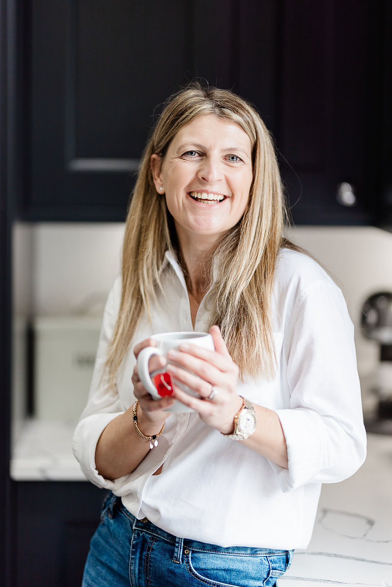
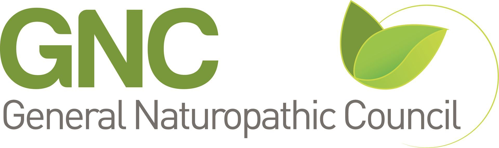

Registered practitioners, real experience, and a genuine investment in getting this right for every client.
Naturopathic Health Coach, Nutritional Therapist, and the founder of Nutricore Health.
I spent over 20 years in corporate life — including senior management roles — before retraining as a health practitioner. That background matters, because I know first-hand what sustained pressure at work does to your sleep, your stress levels, your relationship with food, and your sense of yourself.
My decision to retrain was both academic and personal. I have always had a genuine passion for nutrition and how the body works — but it was my own health that became the catalyst. Anxiety I managed and largely resolved through diet and lifestyle changes, a fertility journey, gestational diabetes during pregnancy, and navigating perimenopause. Each of those experiences taught me something that no textbook alone could.
More recently I have experienced overwhelm and burnout — something that is so often dismissed or misread as a hormonal issue in women our age. Living through that, and understanding what was actually driving it, reinforced something I see constantly in the women I work with: the load that midlife women carry — professionally, personally, and physically — is significant, and it deserves to be taken seriously rather than explained away.
"I changed my diet, found a new love in strength training, discovered how to slow the pace down, and learnt to listen to my body. Those changes didn't just improve my health — they changed my life."
I founded Nutricore Health because I wanted to build something that cuts through the noise — practical, evidence-led support for women who are done with being fobbed off, overwhelmed by conflicting information, and sold things they don't need.
Alongside working with clients, I lecture at the College of Naturopathic Medicine, lead the Health Coach function at the Association of Naturopathic Practitioners, and run the ANP Business Club. I'm fully immersed in this world — which means I stay close to the latest research, the standards, and the questions that practitioners and clients are actually asking.
Nutricore Health isn't built around one person's availability. It's built around a model that delivers consistent, clinically sound support — whether you're working with Marie directly or with one of our associate coaches.
Every programme — regardless of who delivers it — has Marie's clinical input throughout. Supplement review, test facilitation, and case oversight are built in, not added on.
Sleep, resilience, nutrition, movement, and joy are addressed together — because in women's health, everything is connected. No pillar is treated in isolation.
Recommendations come from research and clinical experience. Not social media. Not supplement companies. Not whatever is being discussed this month.
Associate coaches work within the Nutricore model — trained to the same standard, working to the same approach, with clinical oversight from Marie throughout.
Helen came to health coaching through her own midlife experience — the point where what had worked in her 20s and 30s simply stopped working. Juggling family, career, and persistent fatigue while navigating hormonal changes that nobody seemed to talk about honestly, she retrained to help other women in the same position.
She works with women who want realistic strategies that fit real life — not a complete overhaul, not another fresh start on Monday. Small, consistent steps that actually stick.
Book with HelenA naturopathic health coach and qualified chef who believes in the power of food, lifestyle, and energy work to transform wellbeing. Joining the team soon.

Book a free 20-minute discovery call or get in touch to find out more.